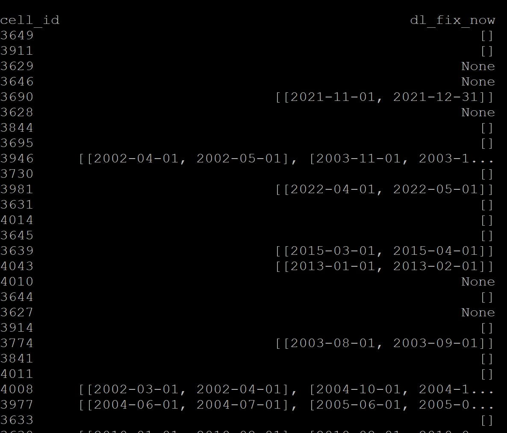

Downloading process¶
===============================================================================================================================
The Eostac script drives the download process, see here for more information on the script process.
To run the script:
1. Get gridcells to download¶
Use the shared Google Sheet to find cells to process. Mark a / in the square for the cell/step for anything you are currently processing and and X if the step has been completed and verified as successful.
====================== alternative method (we aren’t using this currently)
Find a block of cells in need of processing in the cell_blocks.txt file in raid-cel/sandbox/sandbox-cel/paraguay_lc (anything without an X next to it is free)
(if working ion another country, replace ‘paraguay’ with your country name)
cd ~/../../
cd raid-cel/sandbox/sandbox-cel/paraguay_lc/
vim cell_blocks.txt
#"check out" a block of cells by putting an X and your initials next to it. Note your range(s) somewhere.
#save the file:
:wq
[Enter]
===========================================================================================================
2. Edit the downloading script for targeted grid cells¶
cd ~/code/bash/
vim eostac_dl_py.sh
# edit gridcell lines (lines 9 & 10)
To edit a line, type i, edit as desired,
When done editing, save and quit:
hit Esc key and type :wq, followed by Enter key
Go here for more info on editing in vim
This is the default script (with line numbering added for reference below):
1- #!/bin/bash -l
2-
3- #SBATCH -N 1 # number of nodes
4- #SBATCH -n 4 # number of cores
5- #SBATCH -t 0-20:00 # time (D-HH:MM)
6- #SBATCH -p basic
7- #SBATCH -o stacdl_py.%N.%a.%j.out # STDOUT
8- #SBATCH -e stacdl_py.%N.%a.%j.err # STDERR
9- #SBATCH --job-name="stacdl_py"
10- #SBATCH --array=860-870%2
11- ##############################################
12- ### As an array job:
13- GRID_ID=$(($SLURM_ARRAY_TASK_ID + 3000))
14- echo cell_id = $GRID_ID >&2
15-
16- ##Set permissions on output files
17- umask 002
18-
19- ##Settables:
20-
21-- PROJECT_HOME="/raid-cel/sandbox/sandbox-cel/paraguay_lc/stac"
22-- LANDSAT_DIR="${PROJECT_HOME}/grid/00${GRID_ID}/landsat"
23- SENTINEL_DIR="${PROJECT_HOME}/grid/00${GRID_ID}/sentinel2"
24- FILETYPE='.tif'
25- OUT_DIR="${PROJECT_HOME}/grid/00${GRID_ID}"
26- L7STOPYR=2017
27- GRID_FILE="/raid-cel/sandbox/sandbox-cel/LUCinLA_grid_8858.gpkg"
28- EPSG=8858
29- BUFFER=100
30-
31- ################################################
32- ### activate the virtual environment
33- conda activate venv.lucinsa38_dl
34- ################################################
35 - ### prescript:
36- ### if directories are not empty, run script to check for corrupt files
37- if [ -n "$LANDSAT_DIR" ]
38- then
39- eostac check --out-path $LANDSAT_DIR --file-type $FILETYPE
40- fi
41- if [ -n "$SENTINEL_DIR" ]
42- then
43- eostac check --out-path $SENTINEL_DIR --file-type $FILETYPE
44- fi
45- #################################################
46- TIMESTAMP0=`date "+%Y-%m-%d %H:%M:%S"`
47
48- START_YEAR=2000
49- END_YEAR=2023
50- YEAR=$START_YEAR
51- while [ $YEAR -ne $END_YEAR ]
52- do
53- for m in {1..11}
54- do
55- CURRENT_MONTH=$(printf "%02d" $m)
56- NEXT_ITER=$(($m+1))
57- NEXT_MONTH=$(printf "%02d" $NEXT_ITER)
58- START_DATE="${YEAR}-${CURRENT_MONTH}-01"
59-
60-- if [[ $m -eq 11 ]]
61- then
62- END_DATE="${YEAR}-${NEXT_MONTH}-31"
63- else
64- END_DATE="${YEAR}-${NEXT_MONTH}-01"
65- fi
66-
67- echo Working on ${START_DATE} to ${END_DATE} >&2
68- TIMESTAMP=`date "+%Y-%m-%d %H:%M:%S"`
69- echo $TIMESTAMP >&2
70-
71- eostac download --start-date $START_DATE --end-date $END_DATE --bounds $GRID_FILE --bounds-query UNQ==$GRID_ID --out-path
$OUT_DIR --epsg $EPSG --bounds-buffer $BUFFER --l7-stop_year $L7STOPYR --max-items -1 -w 4 -t 2
72-
73- done
74- YEAR=$(($YEAR+1))
75- done
76-
77-- TIMESTAMP=`date "+%Y-%m-%d %H:%M:%S"`
78- TIMETOT=$(($(date -d "$TIMESTAMP" "+%s") - $(date -d "$TIMESTAMP0" "+%s") ))
79- echo Done at $TIMESTAMP >&2
80- echo full process took: $(($TIMETOT/60)) minutes >&2
81- echo core used: $SLURM_NTASKS >&2
82- conda deactivate
Most lines should stay as they are.
the lines that you need to change are:
Grid info:
#SBATCH --array=(line 10 here). Enter the last 3 digits of each gridcell you are processing.
You can enter a range (e.g. 898-908), But be mindful that you are not hogging all the computer bandwidth. If your grid id is >999, modify the number GRID_ID line (line 13 here) to sum to the id (e.g. cell 3919 = 919 in array line and 3000 in GRID_ID equation) (this is because SLURM does not accept numbers greater than 999 in the array line directly)
You can limit the number of cells that are processed at one time by adding %n
For example, 898-908%4 would process 4 cells at a time. When the first 4 finish, the next will start.
Warning
servers throttle downloading loads, so more downloads will fail if too many are processed at once.
After making any edits, save your script and exit:
#(If in insert mode), use [Esc] to exit insert mode
:wq
For further information on the rest of the script (parts you will NOT likely edit):
Line 1
This is the “shebang” line, used in all Unix scripts, that tells the interpreter to execute the script.
Lines 3-10
These are all configuration flags for SLURM.
#SBATCH tells SLURM these are not user comments
(line 3): We aren’t doing any distributed computing across nodes, so we will always use -N 1.
(line 4): -n 4 are the number of CPUs for concurrent or parallel processing (controlled in the Python scripts).
(line 5): -t is the estimated max runtime (increase this if you get timeout errors)
(line 6): -p tells SLURM this job should be sent to the standard partition (there are also ‘short’, ‘gpu’, and ‘largemem’).
(line 7&8): -o and -e are output and error log files
(line 9): -job-name is the name of the batch job
(line 10): array is the list of gridcells for processing (1,2,3,etc or 1-3)
Line 14 (and all ‘echo … >&2’ lines): These are statements to print to the .err file (>&2) information for logging purposes
Line 16,17
umask sets the permission for files that are creates. left digit is for user, middle digit is for group and right digit is for
others. 0= no permissions denied (read/write/execute allowed), 2= write permission denied, 7= all permissions deniedLines 19-29: General parameters for script. Do not need to change.
(line 26): L7STOPYR is the year after which Landsat-7 images should no longer be downloaded/processed
(line 27): GRIDFILE is the file with spatial informaiton for each cell
(line 28): EPSG is the coordinate system. 8858 is Equal Earth for the Americas.
(line 29): BUFFER the distance beyond the grid cell boundary to extend processing (grids will overlap by this much) Lines 35-44 run checks for corrupt files if download directories already exist (used when script is rerun after hanging) Line 46 gets the current time stamp for progress reporting Lines 48-50: User variables for start and end dates to stream. (For Paraguay, the dates are from 1-Jan-2000 to 31-Dec-2022. For Chile, the dates are from 1-Jan-1985 to 31-Dec-2022) *Lines 51-75: The script runs a seperate call to the download script for each month from Jan of the start year to Dec of the end year. > This is to not overwhelm the server when requesting downloads.
Note
For GRID IDs >999: SLURM processors usually do not allow array numbers >999. To get around this, modify the GRID_ID on line 10 to: GRID_ID=$(($SLURM_ARRAY_TASK_ID + X)) where $SLURM_ARRAY_TASK_ID is your array number on line 9 and X is a number added to that to total the actual cell number
3. Run the process¶
#if not already in bash directory, navigate there:
cd ~/code/bash/
#submit the command:
sbatch eostac_dl_py.sh
Note
Current run-time estimates for single grid cells with 4 cores: ~ 15hrs
To check on job:
cat sldown.bellows.909.78.err (with 909 = grid running and 78 = job number)
To check your position in line (works as long as one is running anything big outside of SLURM):
squeue -u [username]
to see if there are a lot of jobs before you:
squeue
4. Check downloading status:¶
There are often errors for some time periods in the first (and second and maybe third…) round of downloading. If these errors occur, the cells need to be rerun to pickup missing images due to these errors. We have a log checking script to make checking these errors easy and to keep track of the status of each cell.
Copy these scripts into your code/bash folder:
cp /raid-cel/sandbox/sandbox-cel/paraguay_lc/templates/CheckLogFiles_dl.job ~/code/bash
cp /raid-cel/sandbox/sandbox-cel/paraguay_lc/templates/CheckLogFiles_dl.py ~/code/bash
now within code/bash, open the bash file for CheckLogFiles_dl.job:
vim CheckLogFiles_dl.job
The database path should be pointing to the location of the global processing database for the project: DBPATH=”/raid-cel/r/downspout-cel/paraguay_lc/cell_processing.csv” IGNORE contains dates that commonly have errors that we cannot fix at the moment. The archive should point to a folder in your homespace where you will archive log files when you are done with them: ARCHIVE=’/home/username/archive/eostac_logs’ (change username to your username and make the directory if it does not already exist
mkdir /home/username/archive/eostac_logs
close the file
#(If in insert mode), use [Esc] to exit insert mode
:wq
now run the script:
sbatch CheckLogFiles_dl.job
This will read and update the master directory and create a summary of cells that were recently run (those with stacdl_py*.err files in your bash directory). After running this script, the only stacdl_py*.err files left in your bash directory are for cells that need to be rerun. You can rerun the whole cell or just the years/months indicated in the errors. To easily view the error periods, open the .out file from the script you just ran (cat eostac_checkDls.*.out' -- but * needs to be replaced with the job id)
and scroll down to the bottom to see dl_fix_now.

5. Rerun cells that did not load completely¶
Any cell with dates in that column need those periods rerun. You might want to copy your eostac_dl_py.sh script and have a eostac_dl2_py.sh script where you modify the dates to run. Make sure to keep the corrupt file check prescript to remove files that may have gotten corrupted during the error event.
6. Move .err and .out files to new directory to facilitate tracking of new downloads¶
These files should move automatically after you run the FileCheck script, but if they do not and get in the way (after you have addressed errors), move them to an archive directory to clean up the clutter.
#Move .err and .out files from /bash to /archive
cd ~/code/bash/
mv /home/<username>/code/bash/stacdl2_py.*.{err,out} /home/<username>/archive/eostac_logs
################################################################################################################################ You can also generate a figure to see which cells downloaded fully: ——-NOTE: We are not currently using this ——————-
#Activate virtual environment:
source .nasaenv/bin/activate
#Run status command (choose a cell number to zoom around for zoom-grid, usually in the middle of your line):
#For Paraguay:
eosvault status --config-file ~/project/config/config_eri_pry.yaml --out-dir ~/code/bash --grid-file /raid-cel/sandbox/sandbox-cel/paraguay_lc/vector/pry_grids.gpkg --zoom-grid <id # of cell to zoom to> --zoom-offset 200000
#For Chile:
eosvault status --config-file ~/project/config/config_eri_chile.yaml --out-dir ~/code/bash --grid-file /raid-cel/sandbox/sandbox-cel/chile_lc/vector/chl_grids.gpkg --zoom-grid <id # of cell to zoom to> --zoom-offset 200000
#Deactivate virtual environment:
deactivate
#Note you can zoom to the full figure (without cell numbers) by dropping the last two cell flags.
To view the Download Progress figure: Download file to view on local desktop by opening a separate terminal and typing:
rsync -raz --progress <username>@ssh.eri.ucsb.edu:~/code/bash/grid_status_eosvault.png Desktop/gridstat.png
Alternatively, you can view the file though an FPT such as WinSCP.
The figure will look something like this:
 The key indicates which cells loaded completely for each product. Those not listed need to be redownloaded. (Turquoise (y) means all are good)
The key indicates which cells loaded completely for each product. Those not listed need to be redownloaded. (Turquoise (y) means all are good)